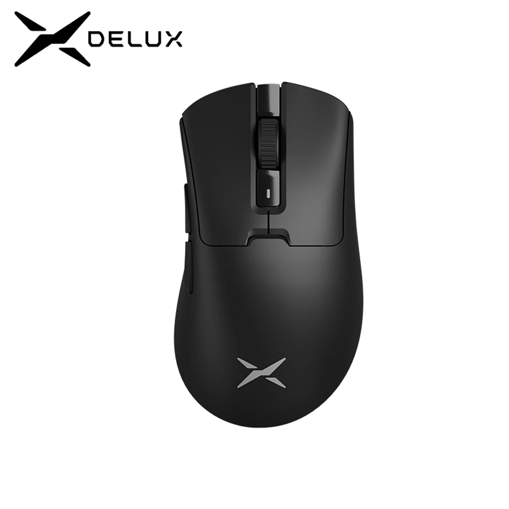

Razer Gaming Mouse, Mercury White
R$ 230,00
Sobre este item:
Sensor: Óptico
Resolução: Ajustável até 16.000 DPI
Taxa de Polling: 1000Hz
Switches: Razer Mechanical Switches
Iluminação: RGB personalizável
Conectividade: Com fio (USB)
Dimensões: Varia conforme o modelo específico
eso: Varia conforme o modelo específico
Comprar

Redragon Griffin M602 KS RGB USB 2.4G Sem Fio Gaming Mouse 8000 DPI ergonômico 8 botões Programáveis para gamer Mice laptop PC
R$ 104,00
Sobre este item:
Sensor: Óptico
Resolução: Ajustável até 8000 DPI
Iluminação: RGB personalizável
Botões: 8 botões programáveis
Iluminação: RGB personalizável
Compatibilidade: Windows e macOS
Comprar

Mouse sem fio e Bluetooth Dell
R$ 158,00
Sobre este item:
Mouse sem fio Dell Mobile — MS3320W
Bateria: 1 pilha AA
Receptor USB.
Comprar

Delux M900PRO Mouse sem fio para jogos
R$ 240,00
Sobre este item:
Adequado para: mãos grandes/jogadores de mão direita
Sensor Opticial: PAW3395
Votação Taxa: 125-250-500-1000-2000-4000-8000Hz
Chip MCU: BK3633
LOD : 1mm/2mm (ajustável)l
Conexões: Dongle USB/Typc-C
WiredWeight : 63 ± 3g
Software do motorista: Windows 8/10/11 Suportado;
Comprar